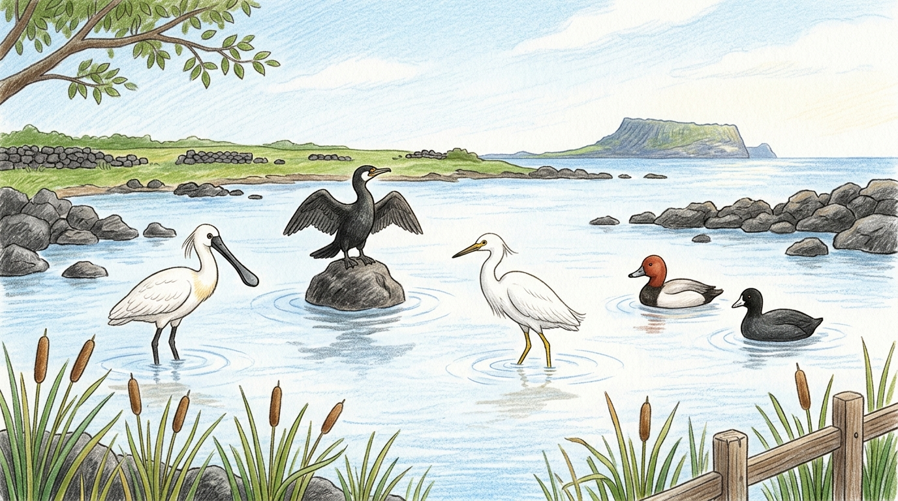
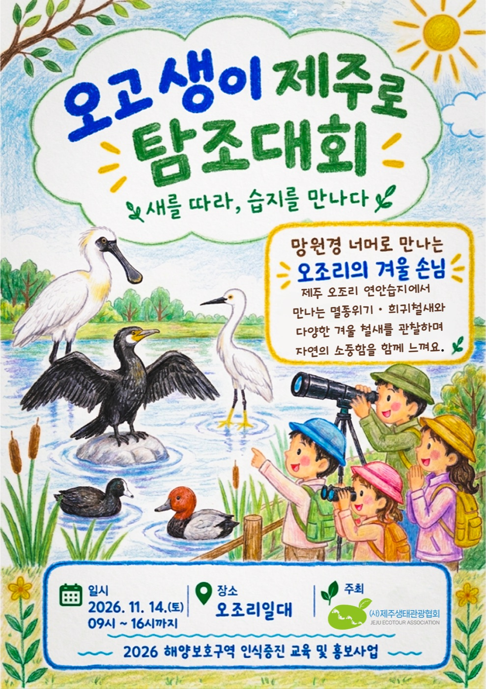
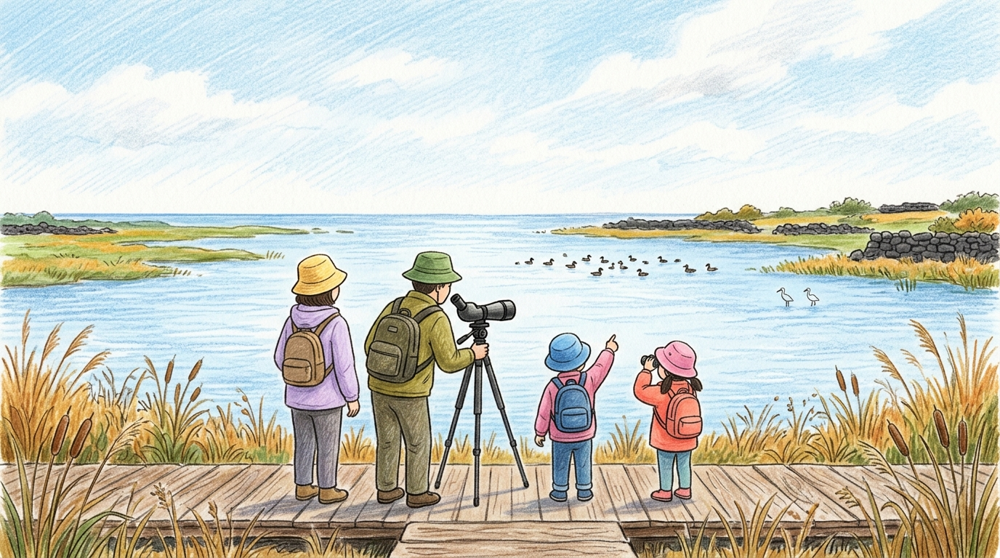

모집 완료
오고 생이 제주로 탐조대회
새를 따라, 습지를 만나다
참가자는 오픈채팅방에 꼭 들어와 주세요
대회 자료와 안내를 「2026오조리탐조대회(오고생이제주로탐조대회)」 오픈채팅방에서 드립니다. 11월 8일 일요일까지 모두 들어와 주세요.
오픈채팅방 들어가기
망원경 너머로 만나는 오조리의 겨울 손님
제주 오조리 연안습지에서 만나는 멸종위기·희귀 철새와 다양한 겨울 철새를 관찰하며 자연의 소중함을 함께 느끼는 대회입니다. 해양보호구역인 오조리 연안습지를 찾는 철새를 시민이 직접 찾아 기록합니다.
- 일시
- 2026년 11월 14일 토요일, 09:00~16:00
- 장소
- 제주특별자치도 서귀포시 성산읍 오조리 연안습지 일대
집결 장소: 오조리종합복지회관 (서귀포시 성산읍 오조로 83) - 대상
- 지역 주민, 도내외 탐조인 (사전 신청, 80명 내외)
- 신청
- 모집이 끝났습니다.
- 주최
- (사)제주생태관광협회
- 사업
- 2026 해양보호구역 인식증진 교육 및 홍보사업
- 참가자 채팅방
- 카카오톡 오픈채팅방 들어가기
11월 8일 일요일까지 들어와 주세요. - 문의
- 064-782-3253


'오고 생이'는 무슨 뜻일까요
'오고생이'는 '고스란히'라는 뜻의 제주어입니다. 여기에 제주로 오는 새(생이)라는 뜻을 함께 담았습니다.
진행 순서
- 09:00~09:30
- 현장 접수참가자 확인
- 09:30~10:30
- 개회식개회선언, 인사말, 운영 규정 설명, 탐조 포인트 안내, 갯벌키퍼스 사용 방법, 가이드 배정
- 10:30~14:30
- 탐조조별 탐조, 식사
- 14:30~15:30
- 심사탐조능력평가시험
- 15:30~16:00
- 심사 및 시상소감 발표 등
어떻게 탐조하나요

- 조를 나눠 탐조 전문가, 마을 가이드와 함께 오조리 연안습지를 관찰합니다.
- 본 새는 갯벌키퍼스 앱과 기록지에 남깁니다.
- 기록과 평가를 바탕으로 심사해 시상합니다.
준비물
- 쌍안경 (팀당 2~3대를 빌려 드립니다. 모두에게 대여되지는 않습니다)
- 갯벌키퍼스 앱을 설치한 스마트폰
- 마실 것, 바람을 막아 주는 옷과 안전 장비
- 탐조기록지(2026년 조류목록)는 대회 당일 인쇄본으로 나눠 드립니다
사진과 영상 촬영 안내
대회 기록과 홍보를 위해 현장에서 사진과 영상을 촬영합니다. 현장 접수 때 활용 동의를 받으며, 미성년자는 보호자가 서명합니다. 동의하지 않는 분은 접수처에 알려 주세요.
이 페이지의 표지와 탐조 그림은 안내를 위해 AI로 만든 그림으로, 실제 장소나 관찰되는 새와 다를 수 있습니다.
행사 기록
대회가 끝나면 사진과 영상, 결과를 이곳에 남깁니다.